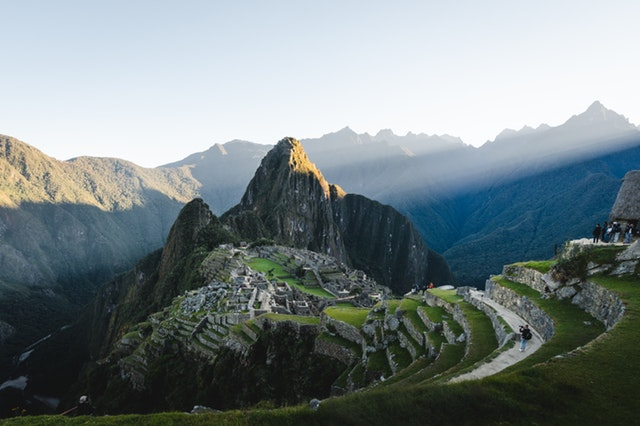

Maravillas del Mundo
Las 7 Maravillas del Mundo Moderno
Monumentos construídos a lo largo de la historia de la humanidad, los cuales resultaron ganadores de un concurso internacional en el año 2007. Se escogieron de entre más de 50 postuladas. Las maravillas escogidas tenían que estar conservadas hasta la epoca actual para poder participar en el concurso.
Aunque hubo más de 100 millones de votos realizados por personas a lo largo del mundo, el proyecto fue altamente cuestionado por organizaciones a lo largo de globo. Dentro de las criticas mas escuchadas al proyecto se encontraron:
- La poca accesibilidad de que tenían algunas personas en países donde se encontraban grandes monumentos
- El poco conocimiento de las personas en cuestiones artisticas y arquitectonicas
- La finalidad economica de la votación, dado que era un votación paga
- La competición entre estructuras de más de 5 siglos de antigüedad con los más recientes

Photo by Errin Casano from Pexels
Machu Picchu
Cuzco, Perú
Photo by Viviana Camacho from Pexels
Chichen Itza
Peninsula de Yucatan, Mexico
Photo by Samson Bush from Pexels
Coliseo Romano
Roma, Italia
Photo by Rodrigo Soldon Souza from flickr
Cristo Redentor
Rio de Janeiro, Brasil
Photo by Paulo Marcelo Martins from Pexels
Gran Muralla China
China
Photo by Abdullah Ghatasheh from Pexels
Petra
Jordania
Photo by Sam Kolder from Pexels